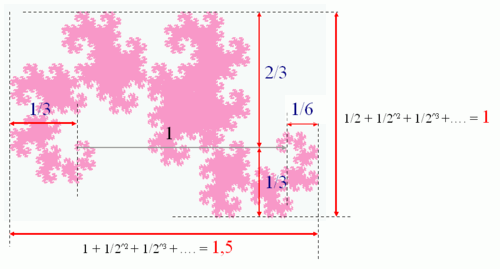
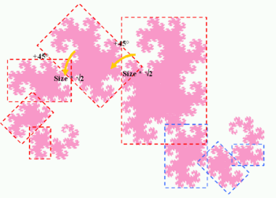
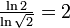
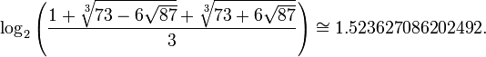
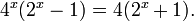

Dragon curve
From Wikipedia, the free encyclopedia
A dragon curve is any member of a family of self-similar fractal curves, which can be approximated by recursive methods such as Lindenmayer systems.
Heighway dragon
The Heighway dragon (also known as the Harter–Heighway dragon or the Jurassic Park dragon) was first investigated by NASA physicists John Heighway, Bruce Banks, and William Harter. It was described by Martin Gardner in his Scientific American column Mathematical Games in 1967. Many of its properties were first published by Chandler Davis and Donald Knuth. It appeared on the section title pages of the Michael Crichton novel Jurassic Park.
Construction
It can be written as a Lindenmayer system with
- angle 90°
- initial string FX
-
string rewriting rules
That can be described this way : Starting from a base segment, replace each segment by 2 segments with a right angle and with a rotation
Dimensions
-
In spite of its strange aspect, the Heighway dragon curve has simple dimensions. Note that the dimensions 1, and 1.5 are limits and not actual values.

-
Its surface is also quite simple : If the initial segment equals 1, then its surface equals ½. This result comes from its paving properties.
-
Its boundary has an infinite length, since it increases by a factor of &radical;2 every iteration.
-
The curve never crosses itself.
-
Many self-similarities can be seen in the Heighway dragon curve. The most obvious is the repetition of the same pattern tilted by 45° and with a reduction ratio of .

-
Its fractal dimension can be calculated : . That makes it a space-filling curve.
-
The fractal dimension of its boundary has been approximated numerically by Chang & Zhang.
In fact it can be found analytically:

This is the root of the equation
